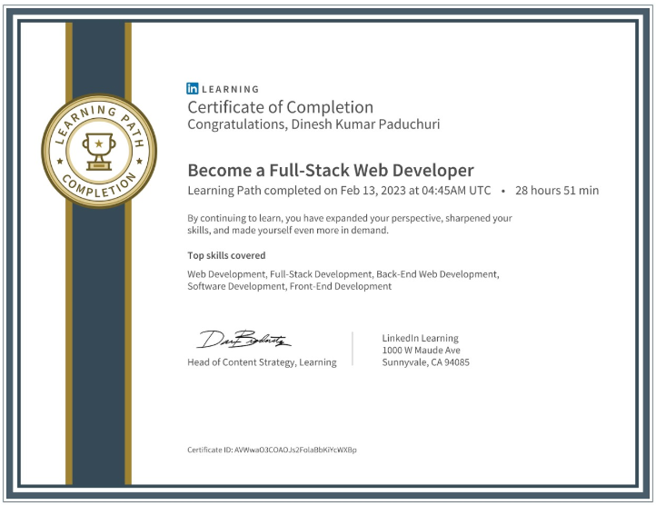
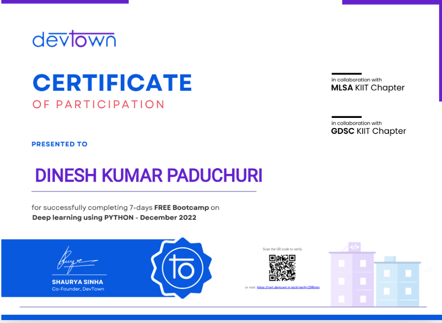
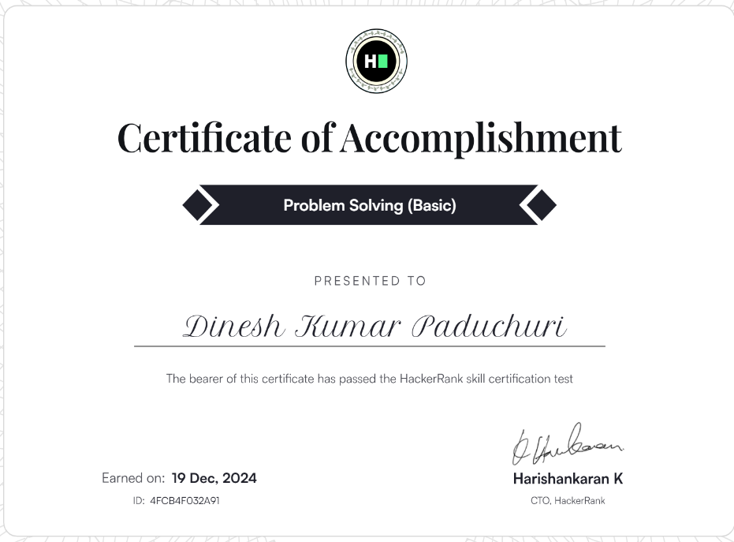

About Me
Hi, I’m Dinesh Kumar Paduchuri, a B. Tech Computer Science student at Lovely Professional University, with a strong interest in Front-End Development and Data Analytics. I focus on building efficient web applications and have hands-on experience in front-end development. I am passionate about problem-solving and continuously upgrading my skills in emerging technologies.
Skills
- Programming: Python, Java, C, JavaScript
- Frontend Development: HTML5, CSS3
- Databases: MySQL
- Cloud & DevOps: Docker
Projects
Customer Churn Prediction Using EDA
Objective: Perform Exploratory Data Analysis (EDA) on a telecom firm's customer data to identify key factors driving customer churn and provide actionable insights to improve retention.
Technologies Used: Python, Pandas, Matplotlib, Seaborn
Key Takeaways: Revealed underlying patterns in customer behavior, enabling the company to enhance retention strategies through targeted interventions.
Word Dictionary GUI Application
Objective: Develop a GUI-based word dictionary application with features like dynamic word lookup, addition, deletion, listing, and a daily word suggestion to enhance vocabulary learning.
Technologies Used: Python3, Tkinter, file handling
Key Takeaways: Improved skills in GUI development using Tkinter, efficient file handling for data persistence, and implementation of dictionary data structures. Designed a user-friendly interface with dynamic functionalities and a daily word feature..
Fitness Club Website
Objective: Develop a fully responsive website to promote fitness programs and trainers, providing an engaging and user-friendly platform to attract new members.
Technologies Used: HTML, CSS
Key Takeaways: Designed a modern, organized layout with responsive design principles, improving user experience and accessibility across devices.
Certifications
-
Full-Stack Developer Certification - LinkedIn Learning
 -
Python 7 Days Bootcamp - Devtown
 -
Problem Solving (Basics) - HackerRank

Achievements
- Five Star Coder in HackerRank (Python & Java)
- Featured in News Paper For Our Community Development Project
- Gold Medalist in International Maths Olympiad
Contact
📞 +91 7569023221
📧 paduchuridineshkumar@gmail.com